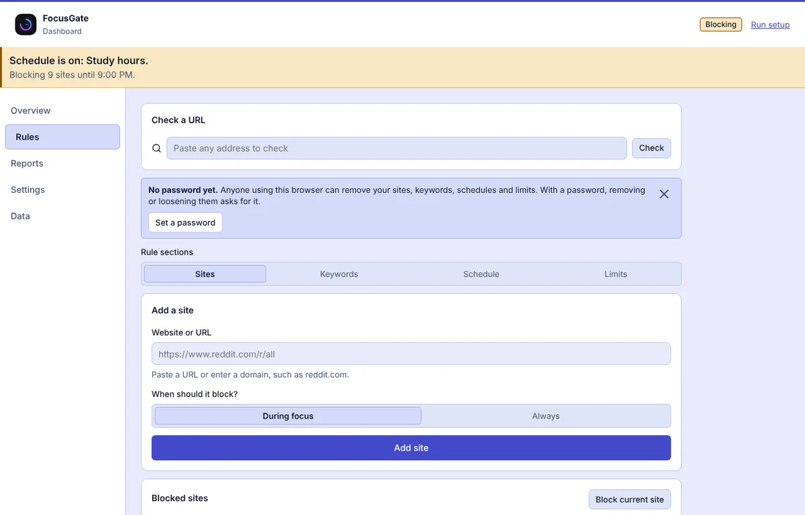
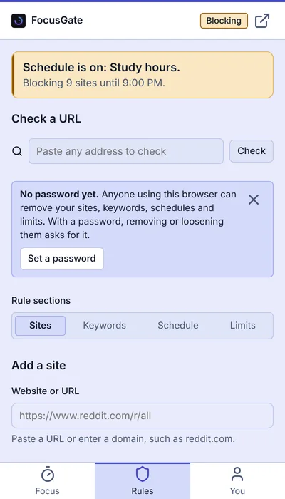
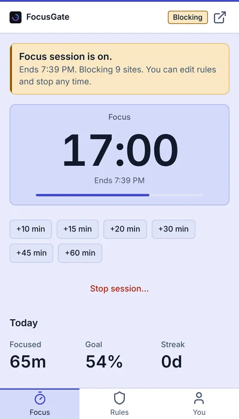
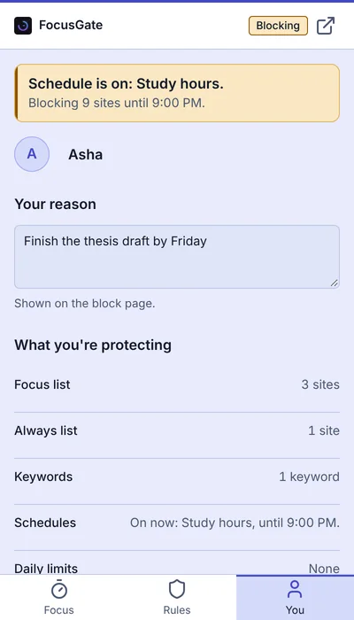

Home / Features
Features
FocusGate blocks distracting websites and keywords, runs a focus timer, and shows your progress. Here is everything it does.
Block websites
Keep two lists: a focus list that blocks during sessions and schedules, and an always-blocked list that works all day.
- Related addresses such as x.com and twitter.com share one entry
- Pick from your existing sites, your custom presets and the built-in presets with one tap
- Blocking happens at the browser's network level, without reading page content

Block keywords
Block searches and pages that match your words, or hide matches on supported pages such as YouTube and Google Search. A match log shows what was caught.
Schedules that explain themselves
Block on the days and hours you choose, including overnight.
- Start from a Work hours, Study or Sleep template
- Choose exactly which sites each schedule blocks, or use your Focus list
- The Schedules screen says what is on now or what starts next, and shows your whole week
- The block page says which schedule blocked the site and when it ends

Daily limits
Give a site a time or page-open budget for the day. When the budget is used up, the site blocks. FocusGate stops counting time when you step away.
A focus timer with locks
Start a session in one click from the side panel (the sidebar in Firefox), extend it or stop it. A card says what is on, when it ends and what is blocked.
Choose how firm to be
- None: stop any time
- Strict: stopping early needs your password, or the phrase "I GIVE UP" and a 15-second wait if you have not set one
- Commit: no early stop at all
Sessions you stop early are shown, but only finished time counts toward your daily goal, streak and achievements. When a session ends you get a done card, a soft chime you can turn off, and a short message when you reach your goal.

Block now No early stop
A timed block for when you want no way out. Pick sites and an end time, from 5 minutes up to 30 days, with up to 500 sites.
Independent of your password
Block now never asks for a password and a password cannot end it. It runs until the time you chose.
Locks things down while it runs
Sites, keywords, schedules and limits cannot be removed or loosened. Content filters cannot be turned off. The password cannot be changed or removed, and your data cannot be reset.
Easy to set up
Pick from your existing sites with one tap, or add new ones. It has its own tab in the dashboard and a card in the side panel.
Content filters Beta
Hide parts of a page instead of blocking the whole site. They are all off by default, and marked Beta because they depend on each site's page layout, which can change without notice.
| Site | What it can hide |
|---|---|
| YouTube | Shorts shelves and menu entry (Shorts links open as normal videos), the home feed, suggested videos, comments |
| Reels, Explore | |
| X (Twitter) | Trends and Who to follow |
| TikTok | The For You and Explore feed |
| The post feed | |
| Hide words | Posts and results that contain your words, on YouTube, Reddit, X, Instagram, TikTok, LinkedIn and Google search |
Turning a filter off asks for your password if you set one, and is locked while Block now or a Strict or Commit session runs.
See your progress
- Today, week and month views, with a week chart
- Focus score, streaks and pages blocked
- The sites that tried hardest to distract you
- Weekly reports and daily mood notes
- Habits, a daily goal and achievements
- Your own reason for focusing, shown when you hit a block
Light and dark themes, built for keyboard and screen-reader use. Keyboard shortcuts: Alt+Shift+F starts or stops a focus session and Alt+Shift+B blocks the current site. Export or import a backup any time.

Browser support
FocusGate works in Chrome, Edge and Firefox. A few things differ.
| Chrome | Edge | Firefox | Firefox for Android | |
|---|---|---|---|---|
| Install from | GitHub release | Edge Add-ons | Firefox Add-ons | Firefox Add-ons |
| Minimum version | 116 | Chromium 116 engine | 140 | 142 |
| Opens in | Side panel | Side panel | Sidebar | A tab |
| Shortcuts, notifications, idle detection | Yes | Yes | Yes | Skipped |